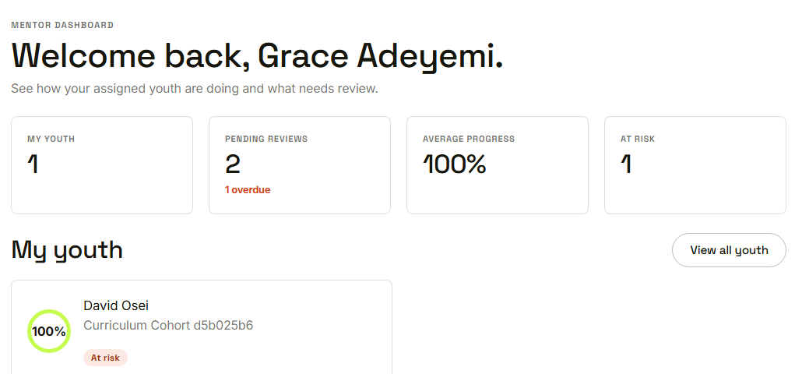
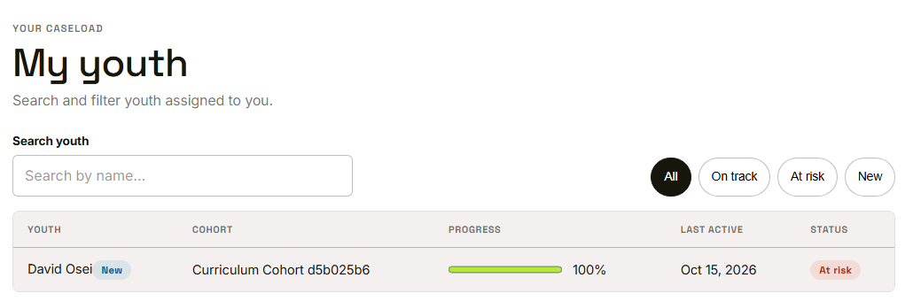
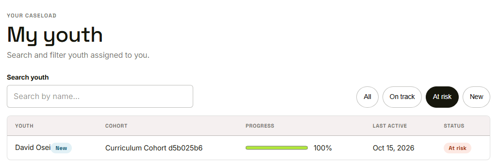
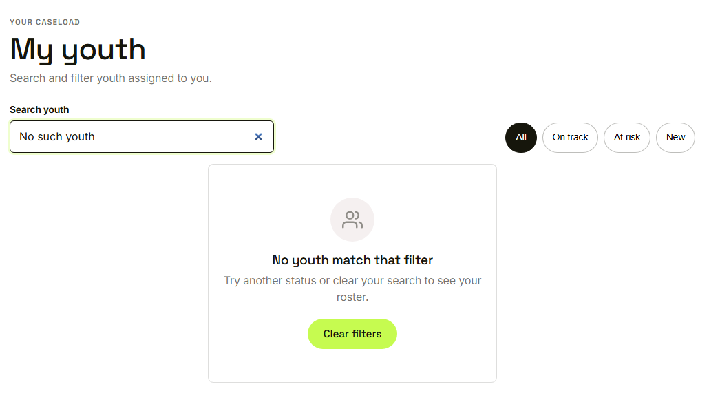
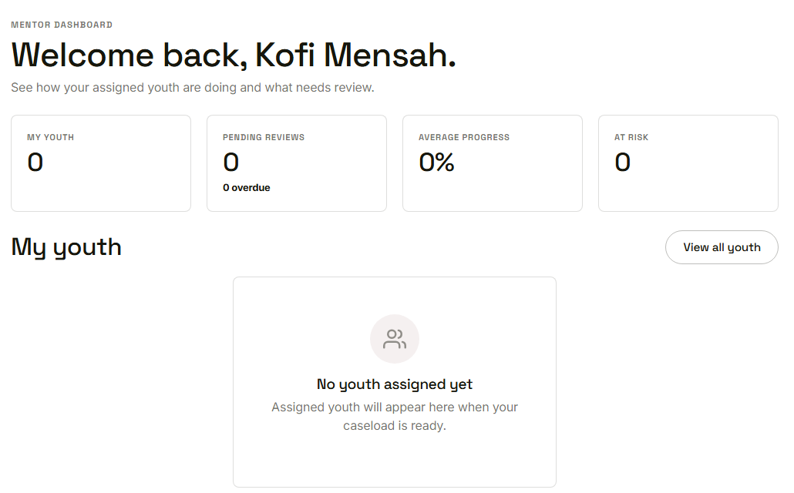

Waypoint · Video 056
The mentor dashboard and roster
Only your own youth, and what needs you first
Four numbers and a short list

Counts for the mentor's own youth
My youth

Search and four filters
At risk first

The At risk filter
A labelled empty state

No youth match, with a way back
A mentor with no youth yet

Zero counts and a plain message
Things to remember
- Four counts, over the mentor's own youth only
- Overdue reviews are called out
- Search, and filter by All, On track, At risk, New
- Empty results come with a clear message